Judit Neddermann, és una cantautora catalana,Formà part dels grups de música The Gramophone Allstars, Verd i Blau, Clara Peya, Luzazul i Coetus
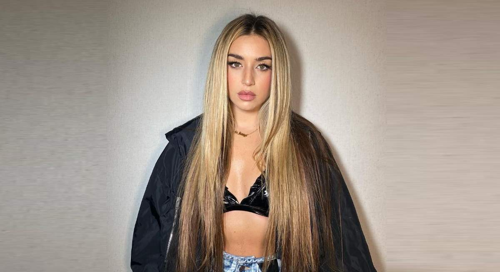
Miriam Doblas Muñoz, popularment coneguda com a Lola Índigo, és una cantant i ballarina espanyola.
, va ser la primera expulsada d'Operación Triunfo 2017, Amb el seu primer senzill, «Ja no vull res», va aconseguir la certificació de doble disc de platí el desembre de 2018
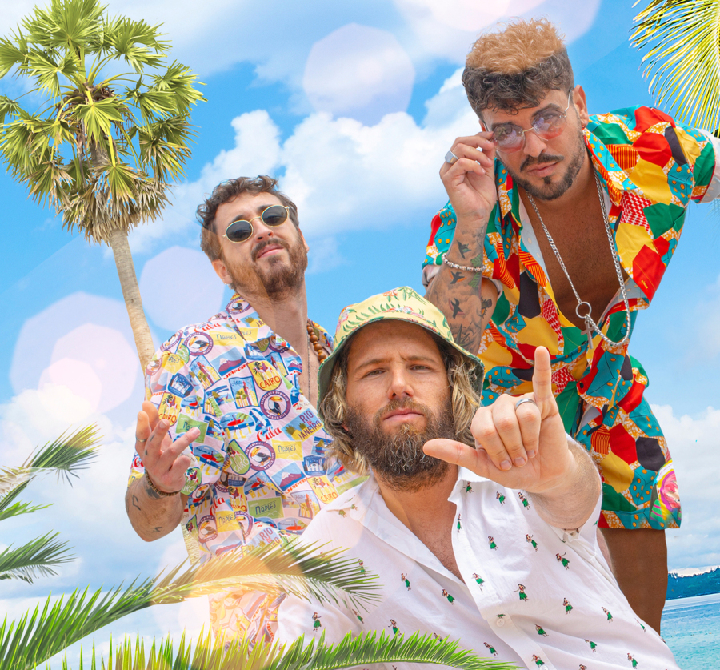
Bombai és un grup valencià format per Javi Fernández (veu principal), Vicente Cervera (guitarra elèctrica) i Ramón García (guitarra acústica). Tots tres van néixer al barri de Monteolivete i van anar junts al col·legi. Tot i que cadascun va provar sort en la música
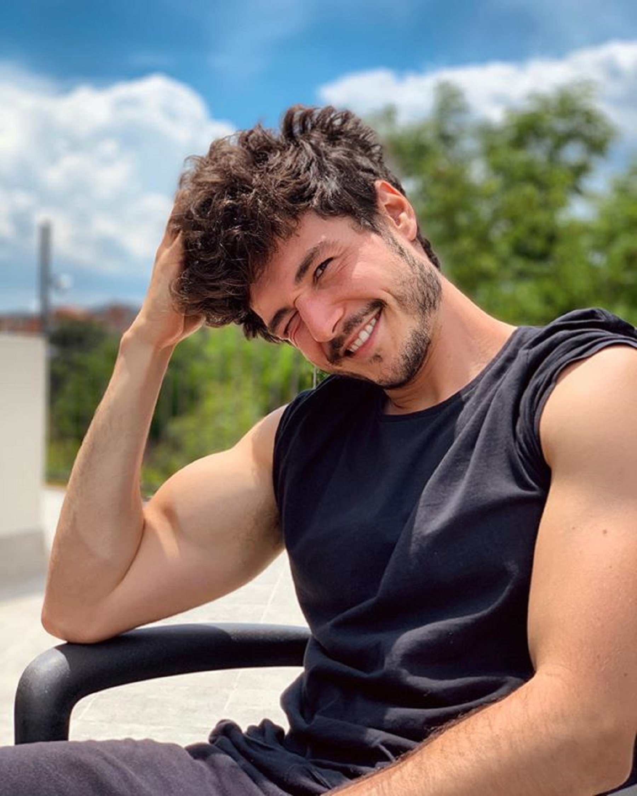
Miki Núñez o simplement Miki, és un cantant espanyol que es va donar a conèixer el 2018, quan va formar part de la desena edició d'Operación Triunfo, quedant en sisè lloc.
Al gener de 2019, va ser elegit durant la Gala Eurovisió d'OT 2018 per representar Espanya al Festival de la Cançó d'Eurovisió 2019 amb el tema La venda. El 13 de setembre del 2019 va treure el seu primer disc, Amuza, que li va permetre fer la gira "Amuza" per tot el país.
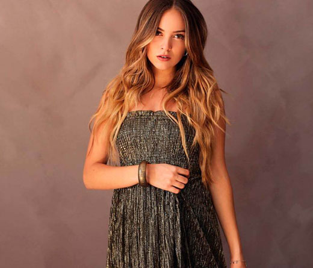
Ana Mena és una cantant, actriu i model espanyola,
va debutar a la indústria musical el 2016 amb el seu senzill «No sóc com tu creus»,
A partir d'aquell moment, la seva carrera va fer un gir radical alternant una sèrie d'èxits que l'han convertit en una de les artistes espanyoles més escoltades de l'era del streaming. Segons casa discogràfica, el 2022 Mena acumula vendes equivalents a un disc de Diamant, quaranta-dos discos de Platino i tres d'Or, principalment entre Itàlia i Espanya.
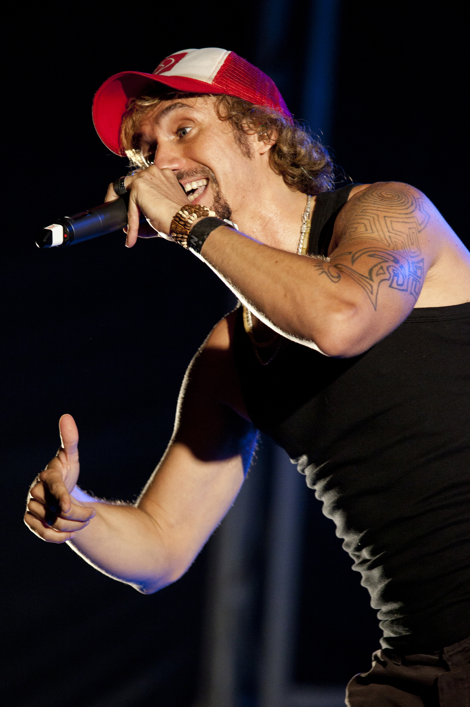
Macaco, és un cantant català, La seva música és una barreja de rumba, reggae i funk, En els seus orígens com a músic de carrer, (a les rambles de Barcelona) va reclutar músics de diversos països com Brasil, Camerun, Veneçuela o Espanya, i va arrencar el seu propi projecte multicultural batejant-lo amb el sobrenom: Macaco. Canta en diferents idiomes, com ara l'espanyol, portuguès, francès, anglès, català i italià.
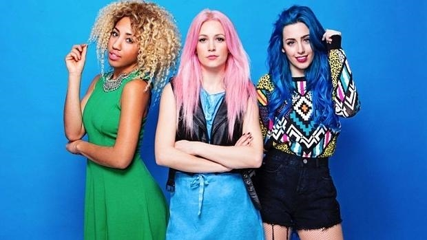
Sweet California és un grup femení espanyol actualment integrat per Alba Reig Gilabert, Tamy Nsue Sánchez i Sonia Goméz González. Van ser descobertes per la discogràfica Warner Music Spain i Must! Produccions i actualment compten amb més de 100.000 discos venuts, un MTV EMA a millor artista espanyol, un premi DIAL de l'emissora Cadena DIAL Espanya, 1 discos d'or i dos de platí i d'altres. S'han convertit en la girl band amb més èxit a Espanya
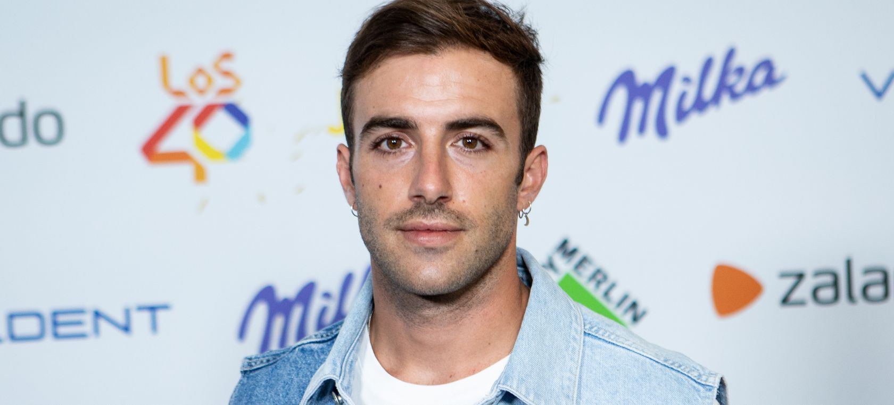
Álvaro de Luna és un cantant, compositor de pop-rock espanyol, exvocalista del grup Sinsinati, supera els 12.000 seguidors a Spotify i es troba a punt de superar la xifra d'1,3 milions d'oients mensuals
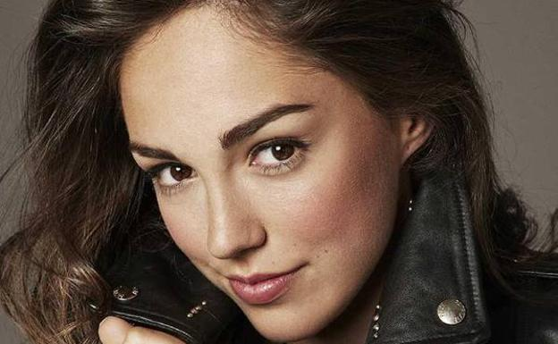
María Dolores Parrado Àvila (Cadis, Espanya, 28 d'abril de 2001), més coneguda com a María Parrado, és una cantant espanyola de pop, és coneguda per guanyar la primera edició de La Voz Kids España, el 2014.
ha estat nominada per a un Kids' Choice Award 2017 en la categoria «Artista espanyol favorit».
El 6 de setembre de 2017 es va estrenar al programa Deixa't portar de Cadena Dial el seu nou senzill titulat «Un miracle» amb Antonio José. Va sortir a la venda a plataformes digitals el 8 de setembre.
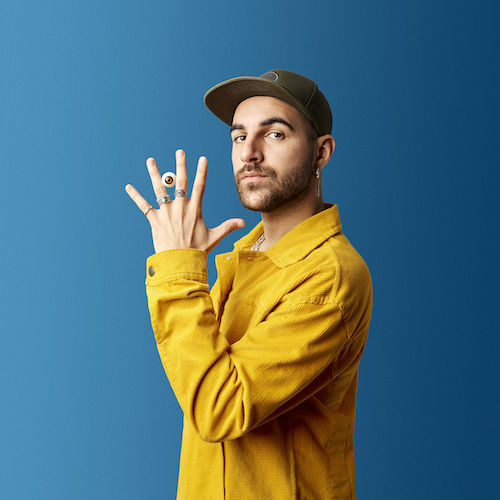
Nil Moliner, és un músic, compositor i cantautor espanyol, va començar la seva carrera musical el 2005, com a cantant i guitarrista de la banda de pop-rock català CyBee, amb la qual va gravar dos discos produïts per Manu Guix i Roger Rodés.
el 2017 va començar a gravar el seu primer EP produït, de nou, per Manu Guix i Roger Rodés a Medusa Estudio.
Soldadet de ferro i El 22 d'octubre s'anuncia el primer Disc de Platí a la cursa de Nil Moliner,
El 21 de febrer del 2020 el català va llançar el seu àlbum debut Ballant a la batalla, que va arribar al top 2 de discos més venuts a Espanya.
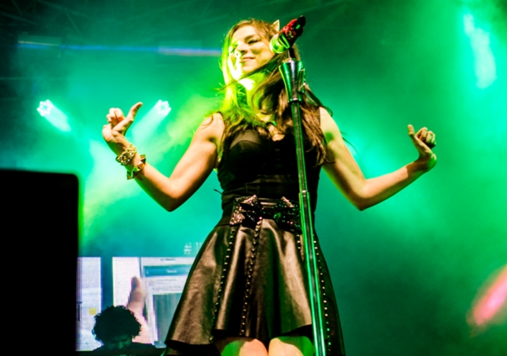
Paty Cantú, és una cantant, actriu i compositora mexicana. Després d'abandonar el grup Lu decideix llançar la seva carrera com a solista
Ha estat guanyadora de diferents reconeixements com els Premis MTV Llatinoamèrica per millor artista nou el 2009, els MTV Europe Music Awards per millor artista llatinoamericà el 2013 i el premi de la Societat d'Autors i Compositors de Mèxic per la seva trajectòria i composició. També ha estat nominada tres vegades als Premis Telehit, dues vegades als Premis Oye!, i cinc vegades als Nickelodeon Kids' Choice Awards Mèxic.
Beatriz Luengo és una compositora, cantant, autora, actriu, ballarina i empresària espanyola, Guanyadora de dos Grammy llatins,
coneguda principalment a Espanya, Portugal, França, Itàlia i Llatinoamèrica pel seu treball discogràfic i la seva participació en sèries com Un paso adelante.
És directora de la seva pròpia escola de dansa a Madrid. Va ser nominada al Grammy Llatí el 2012 i 2018 amb els seus dos últims àlbums al Millor Àlbum Pop Contemporani, i és guanyadora del Grammy Americà per escriure el disc A qui vulgui escoltar de Ricky Martin.
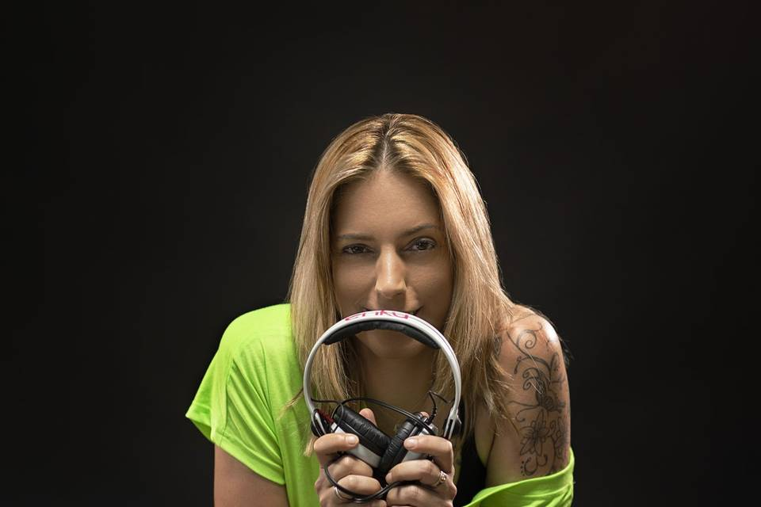
Dj Enka,
des de molt petita va començar a interessar-se pel món del discjòquei i de la música. Va ser l'any 1998, on va tenir la seva primera residència i experiència a una Sala del Vallès Oriental. A partir d'aquí va anar adquirint coneixements Va ser a partir del 2014 quan va decidir dedicar-se a la producció musical, juntament amb Daniel Trim. Va ser el 2014 quan va publicar el primer track de la mà de Rostermusic. Les seves majors actuacions han estat com a dj resident de llarga durada, tocant diversos estils, treballant amb tot tipus de públic i edats. Fent-ne un valor segur per a l'empresari. Col·laboradora d'emissores de ràdio com Flaix Fm, KickFm, MàximaFm, Els 40Dance entre d'altres


.jpeg)

.jpeg)